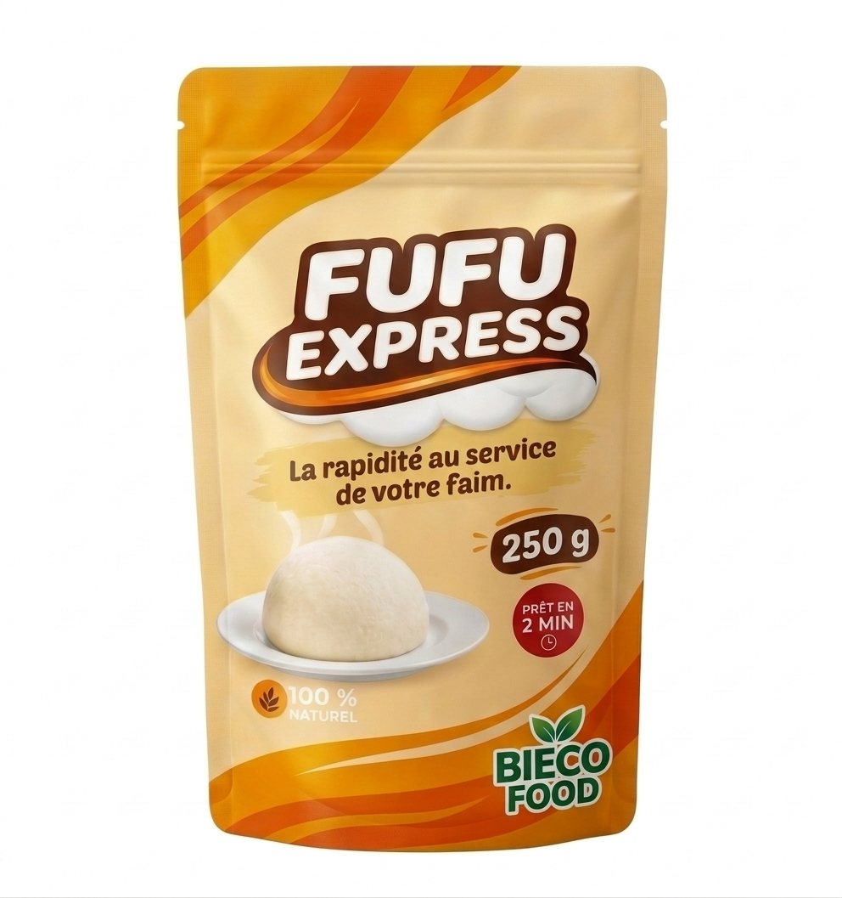
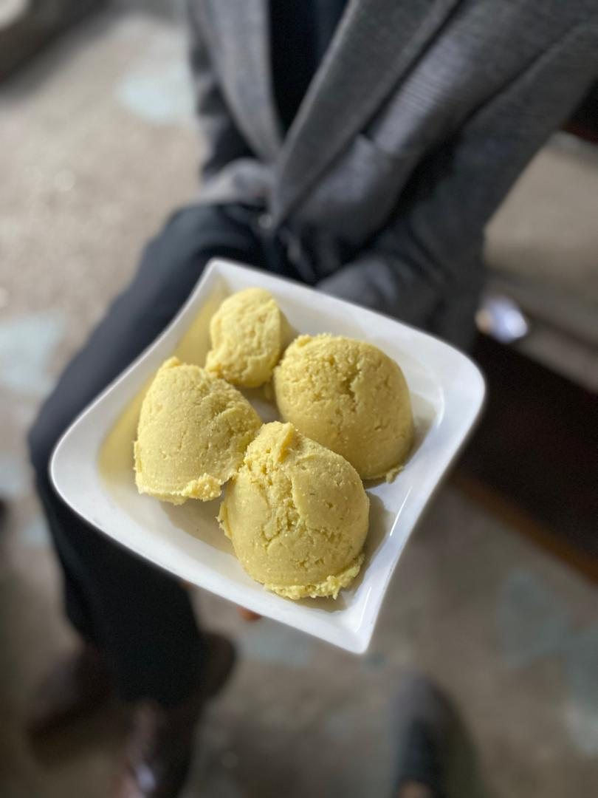

Bieco Food, une entreprise agroalimentaire de Kinshasa, lance son premier produit le samedi 12 décembre 2026 : Fufu Express, une semoule instantanée de maïs et de manioc. Les précommandes sont déjà ouvertes sur WhatsApp, avec paiement à la livraison.
Le produit
Fufu Express se vend en sachet de 250 g. On verse la semoule dans de l'eau bouillante, on mélange, et le foufou est prêt en environ 2 minutes, selon Bieco Food. La semoule est faite de maïs et de manioc.
L'entreprise vise les familles, les mamans qui travaillent, les étudiants et les restaurants de Kinshasa : tous ceux qui aiment le foufou mais n'ont pas toujours le temps de le préparer. Son slogan le dit simplement : « La rapidité au service de votre faim. »

Derrière la marque
Bieco Food a été fondée par Jérémie Mpiana, un jeune entrepreneur congolais.
Comment le précommander
- Lancement officiel : samedi 12 décembre 2026, à Kinshasa.
- Précommande : sur WhatsApp au +243 808 404 026.
- Paiement : à la livraison.

Ce que tu peux en tirer
Jérémie Mpiana est parti d'un plat que tout le monde connaît à Kinshasa et d'un problème simple : le temps qu'il faut pour le préparer. Pour lancer un produit, on n'a pas toujours besoin d'une idée inconnue. Il suffit souvent de rendre plus facile ce que les gens font déjà chaque jour.
Il ouvre aussi les précommandes avant la date de lancement : il sait ainsi combien de sachets préparer, et ses premiers clients attendent déjà le produit.
Article réalisé en partenariat avec Bieco Food, client de LUKOJI. Informations et images fournies par Bieco Food.
LUKOJI · Innover · Créer · Impacter